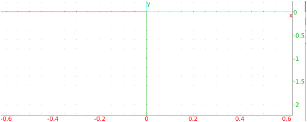
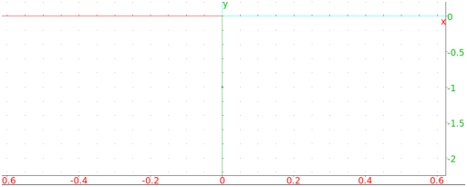
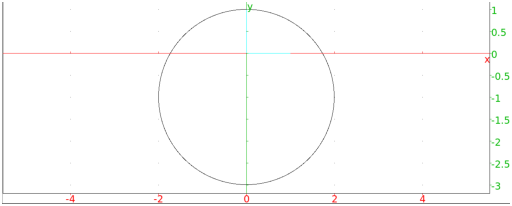

13.15.6 Similarity in the plane: similarity
See Section 14.14.6 for similarities in space.
The similarity command creates a command to rotate and
scale about a given point.
-
similarity takes three mandatory arguments and
one optional argument:
-
P, a point (the center of the rotation).
- r, a real number (the scaling ratio).
- θ, a real number (the angle of rotation).
- Optionally, G, a geometric object.
- similarity(P,r,θ) returns a new command which
rotates about P through an angle of θ and scales about P
by a factor of r.
- similarity(P,r,θ,G) returns and draws the
transformation of G.
Examples
-
Input:
| s:= similarity(i, 2, -pi/2) |
| s(1+i)
|
Output:

then:
s(circle(1+i,1))
Output:
- Input:
similarity(i, 2, -pi/2, 1 + i)
Output:

- Input:
similarity(i, 2, -pi/2, circle(1+i,1))
Output:

Note that for a point P and real numbers r and θ,
the command similarity(P,r,θ) is the same as
homothety(P,k*exp(i*a)).